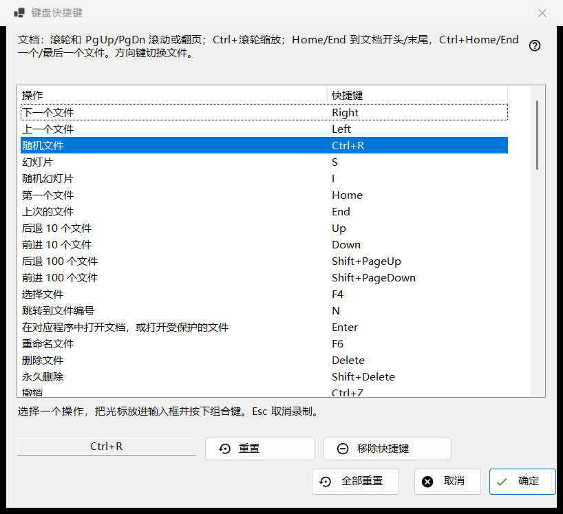
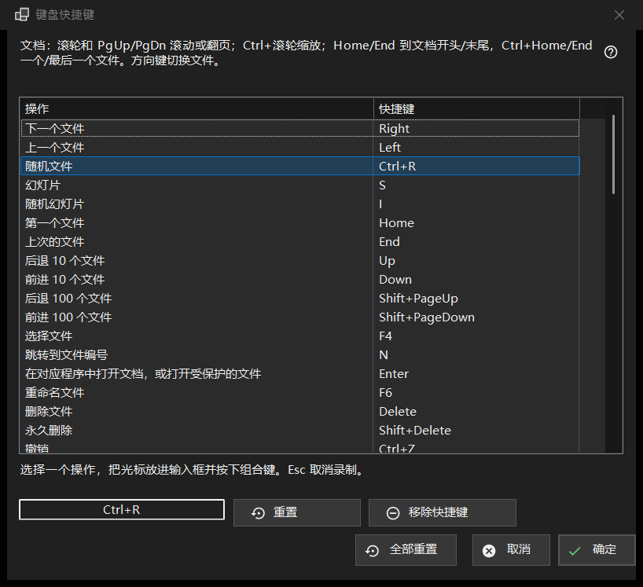

键盘快捷键
用途说明
列出查看器中所有可以更改按键的操作，以及它们当前响应的快捷键。从「设置」的「文件与系统」页面中，点击「键盘快捷键」一行的「配置..」按钮打开。该窗口编辑的是一份工作副本：在您点击「确定」之前，任何更改都不会写入您的配置文件。


操作顺序
- 打开「设置」，进入「文件与系统」，点击「键盘快捷键」一行的「配置..」。
- 在列表中选择一个操作。
- 点击列表下方的输入框，按下新的组合键。
- 如果该组合键已被另一个操作占用，请选择「交换快捷键」、「从那个操作中移除」或「取消」。
- 对其他操作重复以上步骤；需要时使用「重置」、「移除快捷键」或「全部重置」。
- 点击「确定」保留更改，或点击「取消」放弃全部更改。
界面元素
操作与快捷键列表
每一行是一个操作及其主快捷键；没有按键的操作显示「未指定」。十个文件夹位置显示为「移动到文件夹 1..0」和「复制到文件夹 1..0」（数字键移动，Shift 加主键盘区数字键复制）。有些操作还会响应额外的出厂按键（「下一个文件」还会响应 Space 和 PageDown）。列表只显示主按键，但只要您给操作设置了新的快捷键，它所有旧的出厂按键就会失效。列表上方的文字列出了文档使用的固定按键（滚轮、PgUp/PgDn、Home/End、方向键），它们不在列表中。 动作「计划操作」会打开 Share Manager 的「计划操作」窗口；它默认没有按键，请为它分配一个按键，以便用键盘打开该窗口。
录入组合键
选中一行，然后点击列表下方的输入框（或双击该行），按下按键，需要时可配合 Ctrl、Shift 或 Alt。输入框会一次性记录整个组合键，单独的修饰键不算组合键。按 Esc 会离开输入框而不录入任何内容。更改会立即显示在列表中，但它仍然只存在于工作副本里。
无法指定的按键
F1、F10、F11、Esc、Windows 键、Menu 键、Alt+Tab、Alt+F4 和 Ctrl+Alt+Delete 属于 Windows 或本程序。按下其中任何一个会显示：「该组合键由系统或程序保留，无法指定。」不会发生任何更改。
组合键已被占用
提示中会指出占用者：「组合键 X 已属于另一个操作。」「交换快捷键」会把当前操作原来的快捷键（可能为空）交给那个操作。「从那个操作中移除」会让那个操作变为「未指定」，并把该组合键交给您。「取消」不会更改任何内容。
重置、移除快捷键与全部重置
「重置」把所选操作恢复为它的出厂按键。「移除快捷键」让操作完全没有按键，因此它的出厂按键也会失效；想关闭某个按键时请使用它。「全部重置」会询问：「将所有快捷键恢复为默认值？」「恢复默认」会清除您在窗口中做的全部更改；「取消」则保留这些更改。
确定与取消
「确定」把整套映射保存到配置文件，查看器立即使用。「取消」关闭窗口，配置文件保持原样。视频和音频的按键（暂停、静音、音量、跳转、速度、逐帧、轨道）作用于正在播放的媒体。